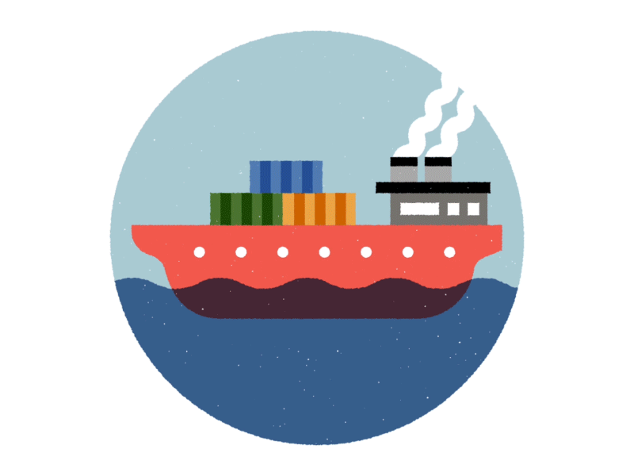

Main Page
Main Page  ICT
ICT  AP
AP Kalakalang Panlabas
Tumutukoy sa palitan ng produkto at serbisyo sa pagitan ng mga bansa.
- Eksport/Pagluluwas - Pagpapadala ng mga produkto at serbisyo sa ibang bansa.
- Import/Pag-aangkat - Pagbili ng kalakal mula sa ibang bansa.

https://i.pinimg.com/originals/9d/dc/53/9ddc53a438b40f781bd2c788fd42b308.gif
Dahilan ng Kalakalang Panlabas
- Pagkakaiba sa Teknolohiya Ang bansa ay maaaring magkaiba sa lebel ng teknolohiya kaya’t ang mga ito’y nakikipagpalitan sa isa’t isa upang matamasa ang bunga nito.
- Pagkakaiba sa Pinagkukunang Yaman Ang mga bansang salat sa likas-yaman gaya ng Japan at Korea ay napipilitang mag-angkat ng produkto samantalang malaking kita ang dala ng kalakalang panlabas sa mga bansang mayroong malawak na pagkukunang-yaman.
- Pagkakaiba sa Panlasa Gawang imported at ang paniniwala na mas maganda ang kalidad nito kaysa sa gawang Pilipino.
- Pagkakaiba sa Halaga ng Produksyon Ang mga kompanya madalas ay pipili ng bansa kung saan mura ang labor, halaga ng mga salik, at kabuuang presyo ng produksiyon.
Patakarang Nakakaapekto sa Kalakalang Panlabas
- Taripa/Tariff Buwis sa mga produktong inaangkat. Maaring ipinipataw ito upang makalikom ng karagdagang pondo ang gobyerno ngunit kadalasan, naka-pagpapataas ito ng presyo at nakapagpababa ng benta ng inaangkat ng produkto. Nagpapataw ng mataas na taripa ang gobyerno upang mapigil ang pagpasok ng dayuhang produktong kalaban ng lokal na produkto.
- Kota Maaring limitahan ang pagpasok ng mga kalabang produkto.
- Subsidy/Sabsidiya: Tulong na ibinibigay ng gobyerno upang bumaba ang halaga ng produksyon ng mga lokal na produkto.
Batayan ng Kalakalang Panlabas
Absolute Advantage
Nakakalikha ng mas maraming bilang ng produkto gamit ang mas kaunting salik ng produksyon kumpara sa ibang bansa.
Comparative Advantage
Ang bansa ay magkakaroon ng espesyalisasyon sa paglikha ng kalakal. Ito ay kapag kaya ng bansa gawin ang kalakal ng mas efficient kumpara sa ibang bansa.
Balance of Trade (BOT)
Tumutukoy sa kalagayan ng kabayaran ng pagluluwas & kabayaran sa pag- aangkat.
Mayroong trade deficit kung mas mataas ang import sa export.
May trade surplus naman kung mas mataas ang export sa import.
Kabutihan ng Pakikipagkalakalan
- Mas maraming produkto ang mapagpipilian sa pamilihan.
- Napapataas nito ang kalidad ng mga produkto na mabibili sa pamilihan.
- Nagkakaroon ng pagkakaunawaan ang mga mamamayan ng bansang nakikipagkalakalan.
- Lumalawak ang pamilihan ng mga produkto sa bansa.
Di-kabutihan ng Pakikipagkalakalan
- Nagiging palaasa ang mga mamamayan sa produktong imported.
- Hindi nalilinang ang pagkamalikhain ng mga mamamayan dahil umaasa na lamang sila sa mga produktong gawa sa ibang bansa.
- Pagkawala ng sariling pagkakakilanlan bunga ng pagpasok ng dayuhang kultura sa lipunan.
Mga Samahan
Association of Southeast Asian Nations (ASEAN)
Itinatag noong Agosto 8, 1967; ang samahang ito’y naglalayong paunlarin ang ugnayan ng mga bansa sa Timog Silangang Asya.
Upang maging ganap ito, nabuo ang ASEAN Free Trade Area (AFTA) noong January 28, 1992, sa Singapore.
Nakabatay sa Common Effective Preferential Tariff (CEPT) na nag-aalis ng taripa at quota para sa mas malayang daloy ng produkto sa ASEAN
World Trade Organization
Pinasinayaan ito at nabuo noong Enero 1, 1995
Ito’y kinikilala bilang samahang namamahala sa pandaigdigang patakaran ng sistemang kalakalan o global trading system sa pagitan ng mga kasaping estado o member states.
Layunin nito ang pagsusulong ng maayos na kalakalan sa pamamagitan ng pagpapababa ng hadlang sa kalakalan (trade barriers), plataporma para sa negosasyon at tulong-teknikal sa developing countries, at paggamit ng trade sanction sa mga kasaping hindi sumusunod sa desisyon ng samahan.
Asia-Pacific Economic Council (APEC)
Itinatag noong Nobyembre 1989, isinusulong nito ang kaunlarang pang-ekonomiya at katiwasayan sa rehiyong Asia-Pacific
Layunin nito ang liberalisasyon ng pakikipagkalakalan at pamumuhunan, pagpapabilis at pagpapadali ng pagnenegosyo, at pagtutulungang pang-ekonomiya at teknikal
Globalisasyon
Ito ay ang proseso ng mabilisang pagdaloy nga mga tao, bagay, impormasyon, produkto sa iba’t ibang bansa.
Mga palatandaan
- Multinational Companies Namumuhunang kompanya sa ibang bansa ngunit ang produkto ay hindi nakabatay sa pangangailangan
- Transnational Companies Namumuhunang kompanya sa ibang bansa ngunit ang produkto ay nakabatay sa pangangailangan
- Outsourcing Pagkuha ng kompanya ng serbisyo mula sa isang kompanya na may kaukulang bayad, na layuning mapagaan ang gawain ng isang kompanya upang mapagtuunan nila ng pansin ang sa palagay nila ay higit na mahalaga
- Offshoring Pagkuha ng serbisyo ng kompanya sa ibang bansa na naniningil ng mas mababang bayad
- Nearshoring Paglilipat ng mga operasyon o serbisyo ng negosyo sa isang kalapit na bansa
- On-shoring Domestic Outsourcing (sa loob ng bansa)
- Mga uri